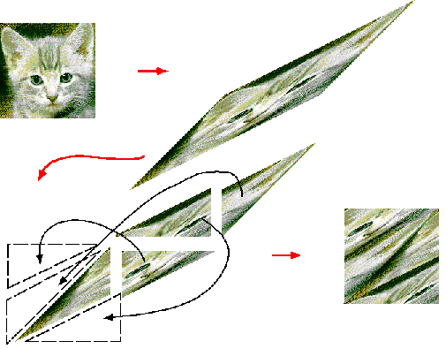

This page gives a rough overview of the transformation known as Arnold's Cat Map. This is a transformation which stretches an image that is composed of n by n pixels and effectively wraps the streched portions around to restore the original dimensions. It is of interest to people doing research in chaos and difference equations because it shows properties that many chaotic systems do. For instance after a certain number of iterations the original image is restored. The Arnold's Cat Map transform is then said to be periodic with the given number of iterations. This interesting transform is shown geometrically in the following image:

The Wolfram webpage has a good detailed discussion on finding the Lyaponuv exponents and eigenvectors of the Arnold's Cat Map. If you do not know what Lyaponov exponents are, The Wolfram webpage has a good introduction on the matter.
The following brief discussion covers the method used to generate the transformation. The transform that is applied to every pixel in the image is something of the form:
| [x] | [x+y ] | |
| [ ] | --> | [ ] mod n |
| [y] | [x+2y] |
Here the point is essentially sheared. The mod n is what causes the sheared image to wrap back around to restore the original n by n image.
As previously stated, images of certain size n, have a definite period fo iterations where they will restore the original image. This fact is shown with the following 124 by 124 image of the Earth which just happens to have a period of 15 iterations.
As you can see after the 2nd iteration or so, the image becomes barely discernable, but order reemerges after 15 iterations.
A Java Applet to apply the Transformation to user defined images is
currently in the works for this webpage and will be added in the near future.
However, for now you may learn more about the Arnold's Cat Map, by navigating
via the following links or by searching for Arnold's Cat Map in
your favorite search engine.